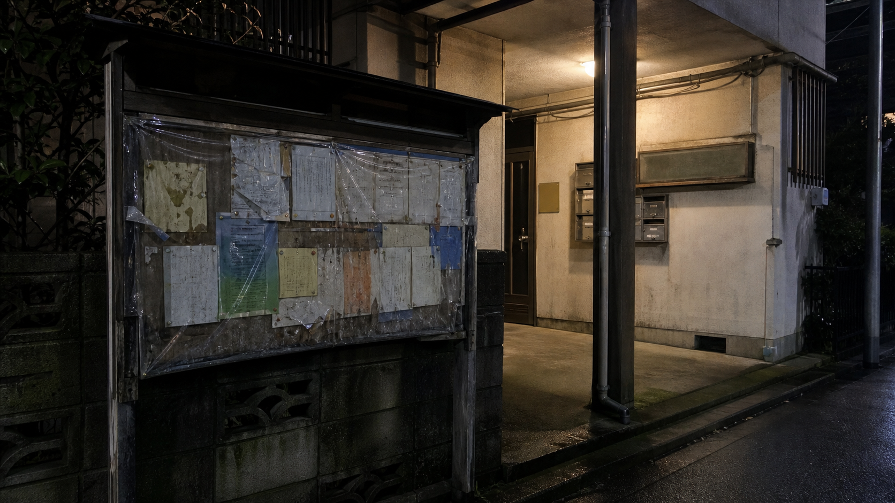

掲示板保存ログ
【保存】七瀬通りの電話って本当に鳴るの？
地域掲示板の保存ログ。
43: 23:17に鳴るって話、駅の放送と混ざってるだけじゃない？ C2の下で聞くと電話っぽく聞こえる。
51: 名前は出すなって言われてるけど、学校の子が市に連絡したらしい。消えたとかじゃなくて、黒い雨具の人を見たって話。
68: 『影踏み』って、地下歩道の照明が落ちて足元の影が前後にずれたからだろ。電話は後から付いた。
- 噂化
- 駅放送 + 照明不調
- 黒い雨具の人物
- 消失ではなく目撃
七瀬ローカルログ / 2009.06.12-2009.06.19

掲示板保存ログ
地域掲示板の保存ログ。
43: 23:17に鳴るって話、駅の放送と混ざってるだけじゃない？ C2の下で聞くと電話っぽく聞こえる。
51: 名前は出すなって言われてるけど、学校の子が市に連絡したらしい。消えたとかじゃなくて、黒い雨具の人を見たって話。
68: 『影踏み』って、地下歩道の照明が落ちて足元の影が前後にずれたからだろ。電話は後から付いた。